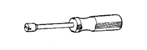

Parking brake cable ASSY No.3 (4WD) Preparation [Installation]
 | 09703-30010 | Bure-Kish-Rita Spring Tsor |
|  | 09718-00010 | Shoehold Down Spring driver |
 | QL-100N | QL Torque wrench (100N) Banzai Co., Ltd. |
| QL-200N | QL Torque wrench (200N) Banzai Co., Ltd. |
| QL-25n | QL Torque wrench (25n) Banzai Co., Ltd. |
| QL-50N | QL Torque wrench (50N) Banzai Co., Ltd. |
| Toyota genuine non -melt |